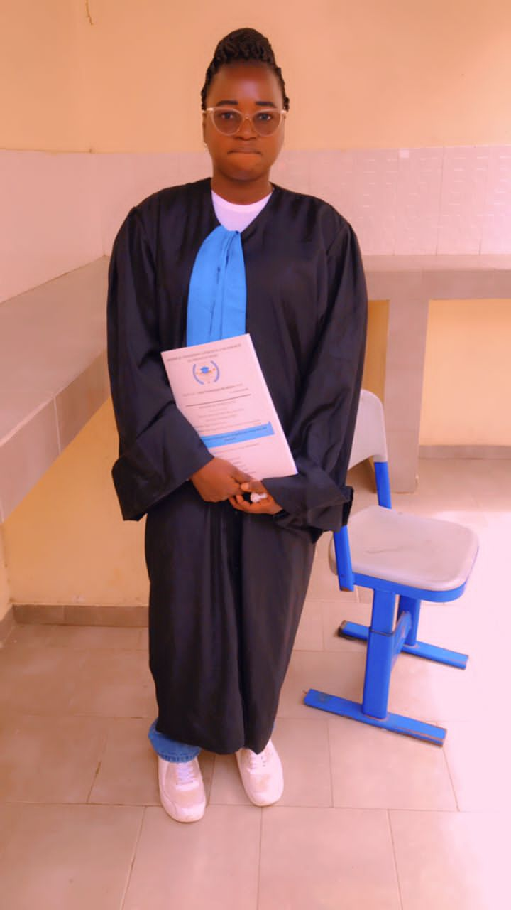
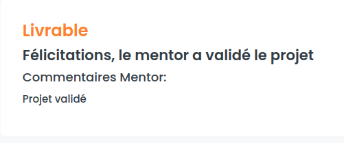
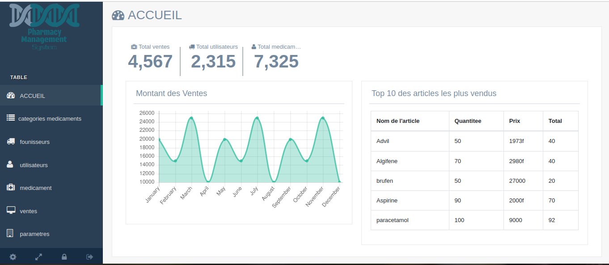

En tant que passionné d'informatique, j'ai récemment obtenu ma licence en informatique, une étape importante dans mon parcours académique. Au cours de mon programme d'études, j'ai acquis une solide formation théorique et pratique dans divers domaines de l'informatique, ce qui m'a permis de développer mes compétences techniques et mes connaissances en matière de systèmes d'exploitation, de réseaux et bien d'autres domaines. Je suis passionné par la technologie et je suis prêt à continuer d'apprendre et de me perfectionner dans ce domaine en constante évolution.
En tant que passionné de sciences, j'ai récemment obtenu ma Licence 2 en Physique-Chimie, une étape importante dans mon parcours académique. Au cours de mon programme d'études, j'ai acquis une solide formation théorique et pratique dans les domaines de la physique et de la chimie, ce qui m'a permis de développer une compréhension approfondie des lois et des principes fondamentaux qui régissent notre univers. En plus de mes compétences techniques, j'ai également développé des compétences en analyse critique, en résolution de problèmes complexes et en communication scientifique, ce qui m'a permis de présenter efficacement mes résultats de recherche et de communiquer mes idées de manière claire et concise.
Chers visiteurs de mon portfolio, Je suis heureux de partager avec vous ma soutenance sur le sujet "conception d'une application de gestion de vente dans une pharmacie". Tout au long de ce projet, j'ai travaillé avec diligence pour approfondir mes connaissances et explorer les différentes facettes de ce sujet captivant. je me suis retrouver avec la mention tres bien!!
Je suis fier de vous présenter mon projet d'immersion et de mise en place de son environnement de développement. Ce projet a été une expérience passionnante pour moi, me permettant de plonger dans le monde de la programmation et de créer un environnement de développement efficace pour mes projets.
Je suis ravi de vous présenter mes projets en algorithmes et structures de données. En tant que développeur passionné, j'ai travaillé sur plusieurs projets passionnants qui démontrent ma compétence dans la conception et l'implémentation d'algorithmes efficaces et la manipulation de structures de données optimisées.
Ce projet m'a permis de mettre en pratique mes compétences en développement web et en conception de bases de données pour créer une plateforme sécurisée et conviviale pour les utilisateurs souhaitant participer à des tontines en ligne. L'objectif principal de ce projet était de créer un système qui permettrait aux utilisateurs de former des groupes de tontine en ligne, de gérer les contributions et les paiements de manière automatisée, et de garantir la sécurité et la confidentialité des transactions.
L'objectif de ce projet était de créer une base de données fonctionnelle pour une application de location de voiture, en utilisant les meilleures pratiques de conception de bases de données relationnelles. Voici les principales fonctionnalités de la base de données : Gestion des utilisateurs,Gestion des véhicules,Gestion des réservations,Gestion des paiements,
Pour ce projet, j'ai utilisé le langage de programmation Python pour créer une application fonctionnelle et conviviale. Voici quelques-unes des fonctionnalités clés de mon application de gestion de budget : Suivi des dépenses,Suivi des revenus,Gestion de l'épargne,Visualisation des données Sécurité.
Mon projet est une application de gestion de contacts qui permet de stocker, organiser et gérer efficacement les informations de contacts tels que les noms, les numéros de téléphone, les adresses e-mail, etc. L'application est développée en utilisant Python en tant que langage de programmation principal, avec une approche orientée objet pour créer une architecture de code propre et modulaire.
Cette application a été conçue dans le but de faciliter et d'optimiser les processus de vente dans une pharmacie, en offrant une solution efficace pour gérer les transactions, le stock de médicaments et les interactions avec les clients. L'objectif principal de cette application est de simplifier et d'automatiser les tâches liées à la vente de médicaments, tout en assurant la sécurité et la confidentialité des données sensibles.
